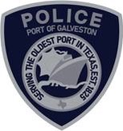

Health & Wellness
- Health insurance
- Dental insurance
- Vision insurance
- Employee assistance program
- Flexible spending account
- Life insurance
- Accident and Critical Illness Insurance

Serve and protect one of Texas's vital maritime gateways. Join the Port of Galveston Police Department and help safeguard our community, visitors, facilities, and port operations.
Begin Application →Police Officers patrol the Port of Galveston to enforce laws and ordinances, regulate traffic, prevent crime, investigate incidents, and protect life and property. This safety-sensitive position supports continuous Port operations under the supervision of a Police Sergeant.
Published pay schedule for Port of Galveston Police Department positions. Salaries are subject to change; contact recruitment for current details and lateral entry placement.
| Status | Hourly | Annually |
|---|---|---|
| 1st year | $28.55 | $59,379.84 |
| After 1 year | $30.53 | $63,511.55 |
| After 3 years | $32.53 | $67,664.90 |
| After 5 years | $34.52 | $71,796.61 |
| After 7 years | $36.50 | $75,928.32 |
| After 10 years | $38.49 | $80,060.03 |
| Status | Hourly | Annually |
|---|---|---|
| First 5 years in rank | $38.90 | $80,903.68 |
| Top out after 5 years in rank | $42.87 | $89,167.10 |
| Status | Hourly | Annually |
|---|---|---|
| First 5 years in rank | $44.25 | $92,044.16 |
| Top out after 5 years in rank | $47.67 | $99,161.09 |
Intermediate Certification +$85.00/mo
Advanced Certification +$125.00/mo
Master Certification +$175.00/mo
Associate's Degree +$85.00/mo
Bachelor's Degree +$125.00/mo
Master's Degree +$175.00/mo
Education and certification incentive eligibility and combinations are subject to department policy. Published maximum combined incentives: up to $4,200 annually.
The linked guide covers the 2026 plan year. Benefits are subject to eligibility, plan terms, and change. Confirm retirement contribution details with Human Resources.
Patrol officers work 12-hour shifts on a 14-day rotation: 2 days on, 2 off, 3 on, 2 off, 2 on, 3 off. Day and night assignments, weekends, holidays, and overtime may apply. Night shift assignments rotate quarterly.
Select a question to view the answer.
Serve a maritime gateway supporting cruise passengers, cargo operations, local businesses, and the wider community. Officers work in a diverse environment with opportunities for professional growth.
Applicants must be at least 21, hold a high school diploma or equivalent, have an active TCOLE Peace Officer License, and possess a valid Texas driver license. Additional requirements are listed in Education and Qualifications above.
Yes. Experienced officers are encouraged to apply. Officers with three or more years of full-time sworn patrol experience may qualify for advanced salary step placement, subject to department review.
The timeline varies depending on the applicant and required screening. Recruitment staff can provide current estimates.
A background investigation, fingerprinting, and applicable medical, drug-screening and psychological evaluations are required. Specific steps and timing will be provided during hiring.
The department has approximately 40 sworn police officers, six telecommunicators, and two civilian administrative employees.
Yes. The department achieved accreditation through the Texas Police Chiefs Association in 2021 and underwent reaccreditation in 2025.
Patrol works 12-hour shifts on a 2-on, 2-off, 3-on, 2-off, 2-on, 3-off rotation. Day and night assignments apply, with night shift rotation quarterly.
Assignments and training opportunities depend on department needs and qualifications. Ask recruitment staff about current opportunities.
The Port offers a 401(a) retirement plan and an optional 457(b) deferred compensation plan. See the benefits guide and confirm contribution and vesting terms with HR.
The posting lists eight hours of vacation accrual per month. Accrual may increase with tenure under applicable policy.
The benefits information provided identifies 13 paid holidays, subject to applicable department policies and scheduling.
Yes. Tuition reimbursement and up to $4,200 annually in education and certification incentives are advertised.
Visible tattoos are permitted when not offensive or inappropriate. Neatly trimmed, well-maintained full beards are permitted under department policy.
Contact department recruitment staff for the current approval process and restrictions.
Contact the Port of Galveston Police Department recruitment staff to ask about availability and eligibility.
Complete the sections below. Use Add another for multiple employers, addresses, relatives, references, and other entries. At the end, select Download PHS & Email to Recruiter. Save the branded PHS as a PDF using your browser’s print dialog, then attach it to the prepared email.
Your application has not been sent. Follow these steps:
If the email button does not open your email program, compose a new message to kbrown@portofgalveston.com with subject Police Officer Application - Port of Galveston. Attach the PDF manually.
Do not assume the department received your application until you have sent the email. The website cannot verify email delivery.